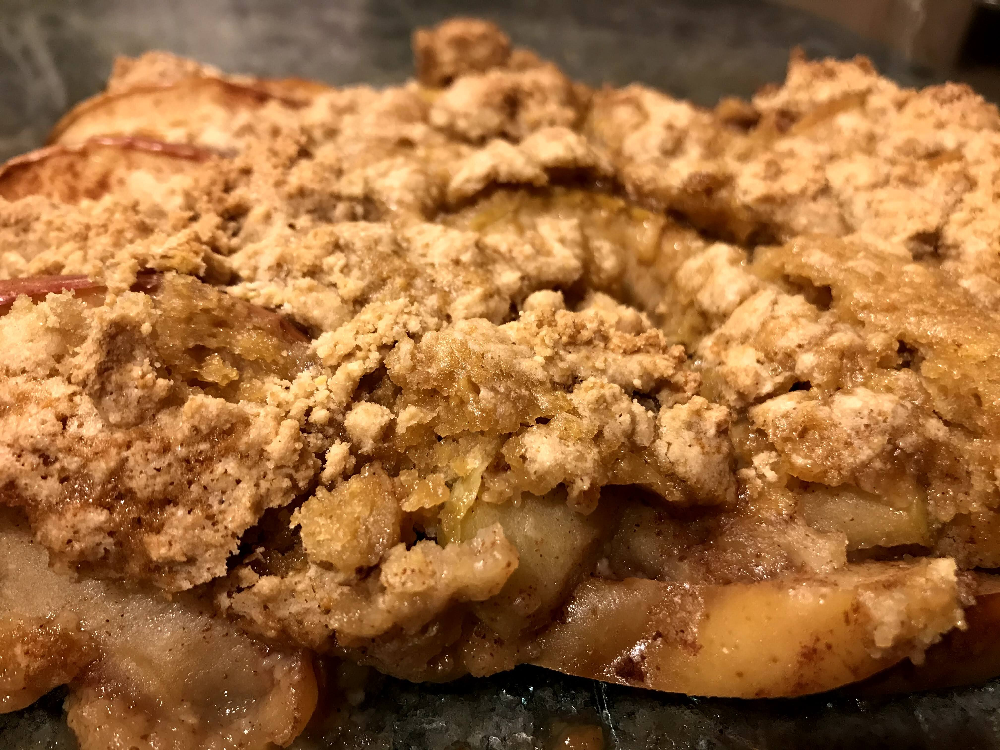

Easy Apple cobbler

Description
Cobbler is a dessert consisting of a fruit filling poured into a large baking dish and covered with a batter, biscuit, or dumpling before being baked. Some cobbler recipes, especially in the American South, resemble a thick-crusted, deep-dish pie with both a top and bottom crust
Ingredients
- 6 large Granny Smith apples - peeled, cored and sliced
- 3 tablespoons white sugar
- 1 teaspoon ground cinnamon
- 1 cup all-purpose flour
- 1 cup white sugar
- 1 large egg
- 1 teaspoon baking powder
- ¼ cup water
Directions
- Preheat the oven to 350 degrees F (175 degrees C). Combine 3 tablespoons sugar and cinnamon in a bowl.
- Layer apples in an ungreased 9x13-inch baking pan, sprinkling each layer with cinnamon-sugar.
- Combine flour, 1 cup sugar, egg, and baking powder with a fork. Sprinkle over apples. Lightly sprinkle water over top.
- Bake in the preheated oven until topping is golden brown, about 30 minutes.